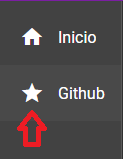
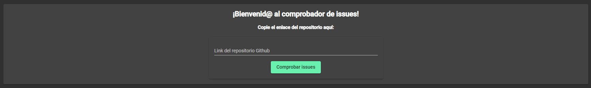
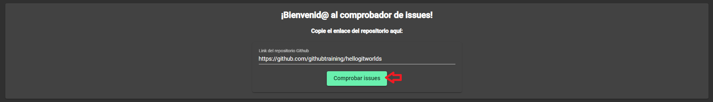

<div class="main-container">
  <mat-card>
    <mat-card-content>
      <h2 class="center">¡Bienvenid@ a la prueba técnica!</h2>
      <h4 class="center">Sigue los siguientes pasos para usar la app:</h4>
      <mat-tab-group mat-align-tabs="center">
        <mat-tab label="Paso 1">
          <mat-card class="p-b-30 flex-content-center">
            <mat-card-content class="inline-flex">
                
              <span class="main-container vertical-center">
                En la barra lateral, pulsa sobre el icono &nbsp;<i>Github</i>&nbsp; para ir a la funcionalidad de la aplicación
              </span>
            </mat-card-content>
          </mat-card>
        </mat-tab>
        <mat-tab label="Paso 2">
          <mat-card class="p-b-30 flex-content-center">
            <mat-card-content>
              
              <span class="main-container vertical-center">
                En esta pantalla se introduce el enlace al repositorio de &nbsp;<i>Github</i>&nbsp; deseado, para conocer todas sus issues.
              </span>
            </mat-card-content>
          </mat-card>
        </mat-tab>
        <mat-tab label="Paso 3">
          <mat-card class="p-b-30 flex-content-center">
            <mat-card-content>
              
              <span class="main-container vertical-center">
                <b>IMPORTANTE:</b>&nbsp;&nbsp; En enlace tiene que ser como el del ejemplo. Puede ir con &nbsp;<i>http://,&nbsp;&nbsp;</i> <i>https://,&nbsp;&nbsp;</i> o sin ningún tipo
                inicio.&nbsp;<i>(Ejemplo: github.com/ejemplo...)</i> 
              </span>
            </mat-card-content>
          </mat-card>
        </mat-tab>
      </mat-tab-group>

    </mat-card-content>
  </mat-card>
</div>
